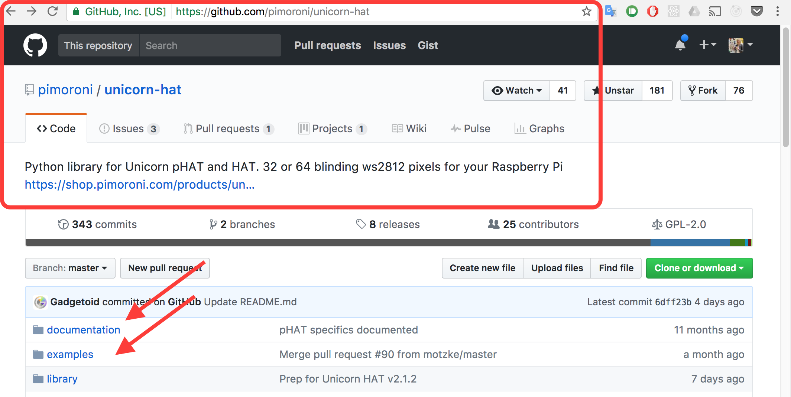

Creating Art
with a Raspberry Pi
Adventures in trying out hardware, code, and having fun in a personal project
stephanie.lol
Stephanie Nemeth @stephaniecodes
Me:
6 months ago
about 6 months ago, i was going through one of the toughest periods so far in my life.
my self-confidence as a person and developer was gone.
i was depressed.
i didn't like how i felt.
so i dragged out myself out of my apt to do something i used to really enjoy doing.
In particular, I went to the Stedelijk contemporary art museum in Amsterdam.
I visited an art museum.
I went to see an exhibit of Jean Tinguely. Swiss artist in the 60s/70s.
For him, art was not about standing in a sterile white space, distantly gazing at a silent painting.
He created machines like this one that could create their own art. and huge kinetic sculptures that
moving parts, lights and sounds. His art was meant to be playful and interacted with by the viewer.
Jean Tinguely
http://www.flickriver.com/photos/46774986@N02/17028829322/
This quote by Jean Tinguely from the exhibit really stuck me after I visited.
I really liked the idea of creating ephemeral experiences that
would connect both the viewer and the artist
and blur the line between them.
“I wanted something ephemeral that would pass like a falling star...
The work had to just transpire, make people dream and talk, and that would be all.“
- Jean Tinguely
I was inspired.
I thought, maybe, I could something like this using my coding abilities?
For me at that time, this experience gave me a ray of light in an otherwise dark place.
I thought it would be cool to make something interactive with moving parts or lights or sounds that could be triggered
by an outside person visiting a website that controlled.
What I dreamed of
What I ended up building was a bit different than what I dreamed of.
I think it is probably helpful to show you my final project
so that you see how I tackled the problems I faced going from that big idea to a more realistic one.
What I Built
Your browser does not support the video tag.
So I started with a big idea of building an art installation in my apt
that could be controlled by a web app.
I thought the first step should be assessing what do you need to know to probably build something like that?
What kind of experience/skills are really needed?
- Coding Skills
- Artistic Ability
- Experience Working With Hardware
- Wiring/Soldering Experience
Time for a reality check. Did I have any of these skills?
No experience with soldering/wiring gave me the most anxiety and felt like the biggest obstacle.
I just wanted to write code and have flashy lights. Could I actually build something without that skill?
Reality Check
I googled.
I wanted to know if it was possible to build anything interesting without soldering?
If there was anything was plug-n-play, off the shelf options for building cool stuff with hardware.
I started googling.
I needed to find a plug and play hardware option.
I found these things could HATS.
HATS
H ardware A ttached on T op
Easily plugs into a Raspberry Pi's GPIO
No Soldering or Wiring!
It unfortunately won't write the code for you, but it gives you examples,
and documentation on how to use the tool.
It makes it easy to get it working with code know to work :)
Can start with getting a sample running and then build off of that.
HATS
They have established libraries!

Unicorn HAT
64 LED Lights
I saw a lot of possibilities with those 64 led lights.
It was a perfect canvas for PIXEL ART designs!
I saw Pixel Art
At this point, I started thinking what the user's experience would be like?
and how would the app the user interacted with look like?
colorpicker at the top.
There's a 64 led grid (8 x 8 square) that represent each of the LEDs on the unicorn hat.
User can click on those to sketch out their design.
When the click submit, it sends the design immediately to my RPI and I get to see their
artwork in my apt!
A Mockup of My Idea
At this point, I had a pretty clear idea of what I wanted to build
but i needed to nail down what I definitely wanted to include in the project
build hardware for first time.
anyone anywhere in the world could visit a website and interact with it.
would create artwork in colors of the user's choosing.
build with js & react to improve skills. not only just because i was interested in them,
but also, remember i said that i had left my job? well, i was thinking of moving into frontend/js dev
so it seemed like it could be beneficial to have a project, particularly one that is a bit off-beat
to show potential employers as part of my job applications.
Must-Haves
- Anyone in the world could interact with the application
- Users can create colorful pixel artwork!
- Build with Javascript & React to improve my skills
Once I have my some specifics in my mind, I needed put together what a toolkit
that would incorporate those must haves and actually use to build the project.
Got some stuff figured out, but how will i get the web app made
with react to communicated with the pi controlled by python?
I think it is really important to emphasis that this is not a linear process.
I didn't have everything figured out when I started.
I know how I wanted to do some parts (hardware, utilizing the library already there for me &
trying out doing the webapp/frontend in react/react-native), but i
had no idea how i was going to actually get them 'wired up' and communicating/sending
messages between them.
3. How do they communicate?
So I did more research.
First, I looked at other projects built with a unicorn hat.
maybe they had encountered this same problem.
I looked at github repos and searched for blog posts.
Other Unicorn HAT projects
- Github repos
- Blog posts
Raspberry Pi project made with React?
- Hard to find examples.
- But, I found one lightning talk video!
What i found out, was that socketio was pretty cool library.
Socket.IO
Simplifies communication between the clients
Works on every platform, browser or device 💪
Has client-side libraries for Python and React! 🎉
Used socketIO to make communication between the frontend client and raspberry pi easy
SocketIO was a lifesaver since I was using different languages/frameworks
for the coding the web apps (React/React-Native) & the Raspberry Pi (Python library)
Project Design
Woo hoo! With my communication problem figured out, I was finally ready to code! whew!
Thinking about all the things you need to do, or only a really big goal can completely overwhelm you.
and actually keep you from achieving that goal since you may just give up or never follow through.
“Taking on large tasks, or too many tasks at once, overwhelms us. You’re more likely to follow through if the task is small. Once successful, you can then try a new activity or increase the original task’s complexity.“
- Sabina Nawaz
So I broke up my project into 3 sequential goals.
Break Up Goals
- Turn on a single LED
- Display pixel art design in 1 color
- Display pixel art design in multiple colors
Then I broke each of those bigger goals into an even smaller goal.
For example, for the first goal of getting one LED to light up.
I broke that into 3 smaller goals.
Light one LED
Break it down into even smaller goals
Click a button, send text message to hardware
Click a button, see one pixel light up
Click on grid square, see that pixel light up
With that approached, I was able to move through lighting an LED, then getting pixels designs to display
in one color, then finally i added a color picker and pixel designs could be in multiple colors.
breaking up my goals, kept my momentum throughout the buid and I had these little victories along
way that kept me motivation and prevented me from getting discouraged.
Breaking Up Goals
Kept my momentum in the project
Multiple small 'wins' prevents discouragement
Light one LED
Display pixel art in only ONE color
Display pixel art in multiple colors!
Whew. Now, I would love for you to interact with my art project and send me your art!
Let's demo this thing!!
Please keep sending designs, but I want to leave you with some final thoughts that
will hopefully inspire you for your next project.
Final Thoughts
- I had never written for hardware.
- I had never written any Python or React Native.
- I had never built anything using Socket.IO.
- I had never built a server with JavaScript.
- I had never combined so many tools into one project.
Final Thoughts
Despite all these "nevers ", I managed to pull off a cool first hardware project using a Pi.
Also, I'm a happy & confident dev again with an awesome job writing JavaScript!
Don't let what you think are your insufficiencies hold you back from tackling the stuff you really
want to build.
Don't let what you think are your insufficiencies hold you back from tackling the stuff you really
want to build.
Thank you!
Now go create something wonderful.
stephanie.lol
Stephanie Nemeth @stephaniecodes